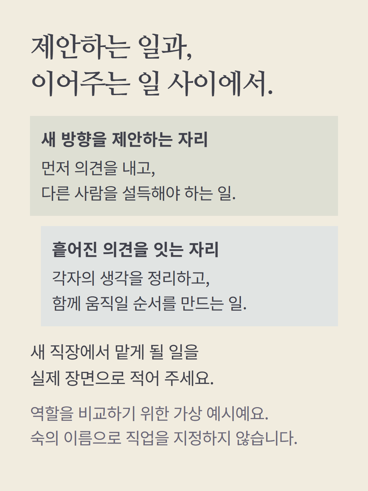
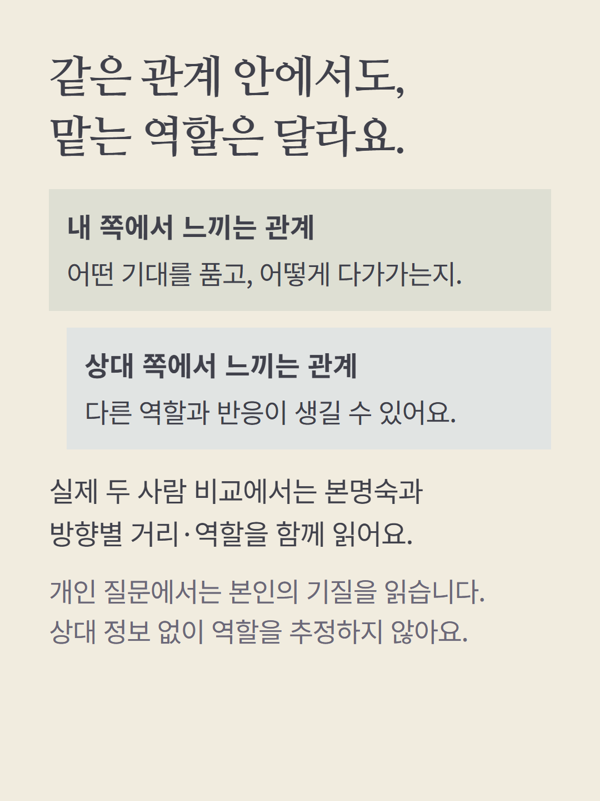
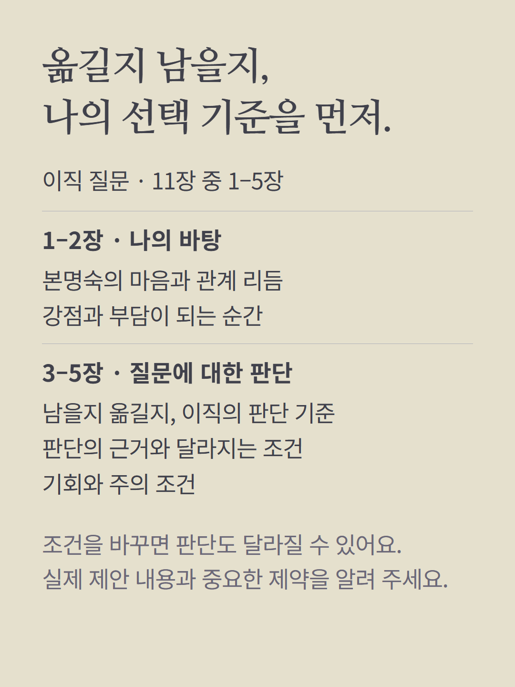
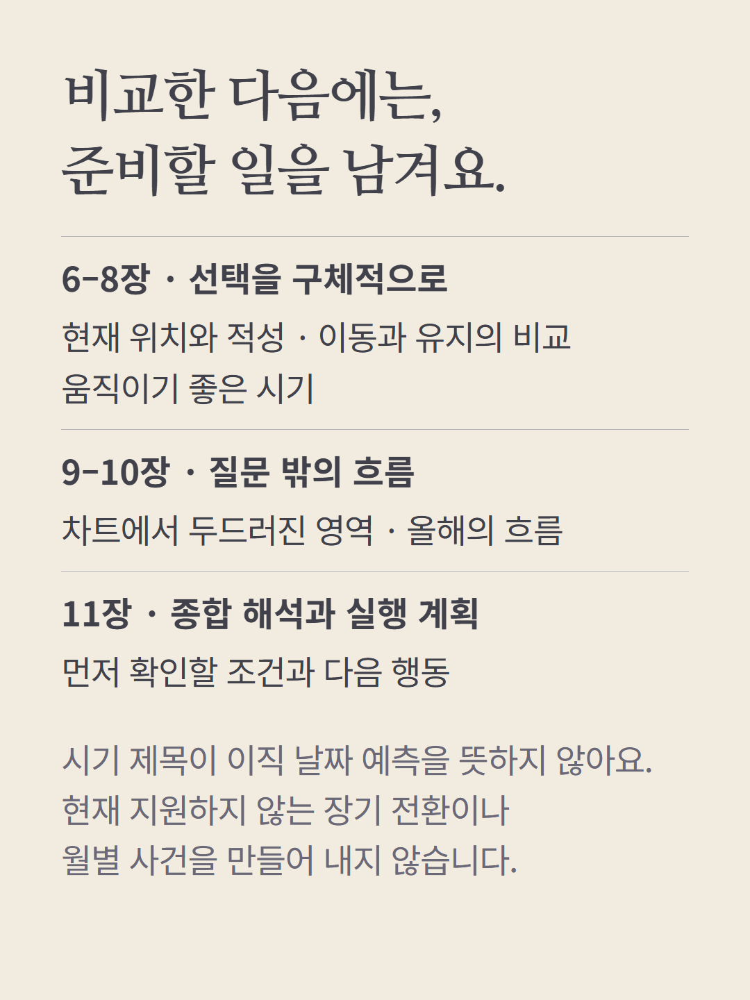
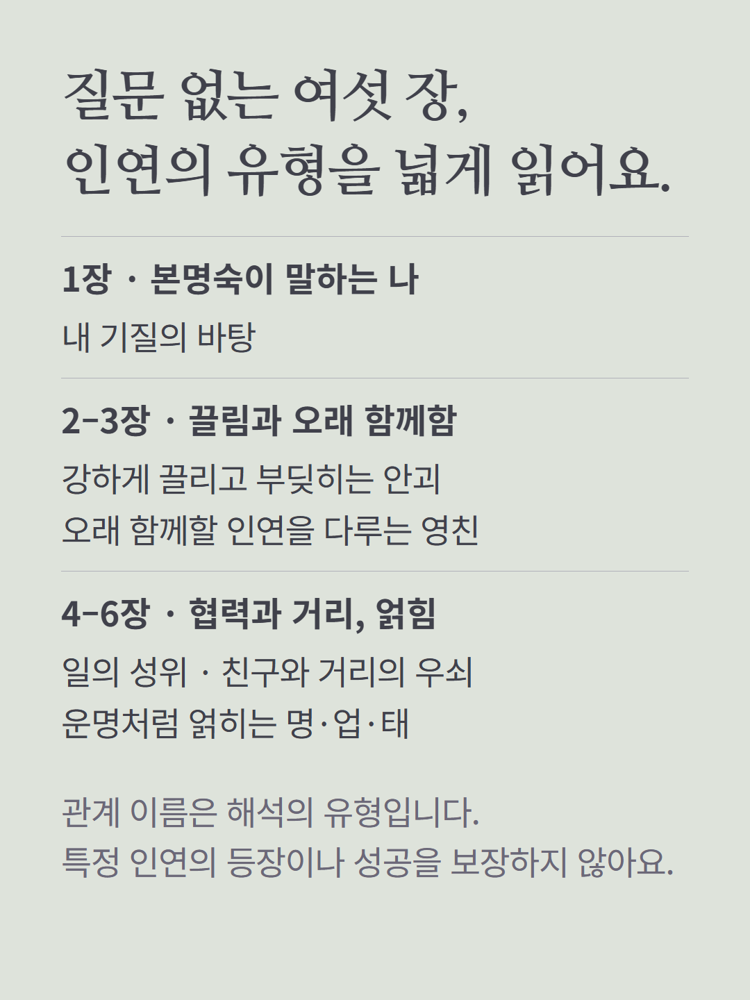
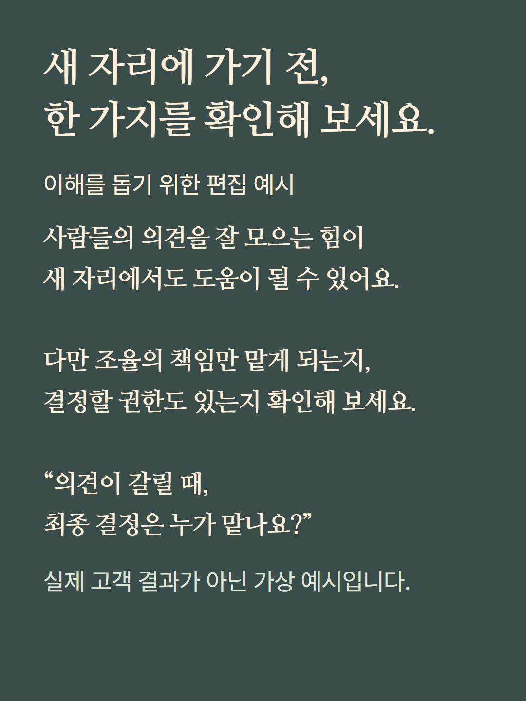
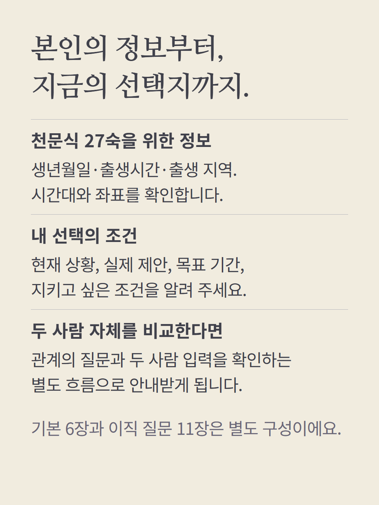
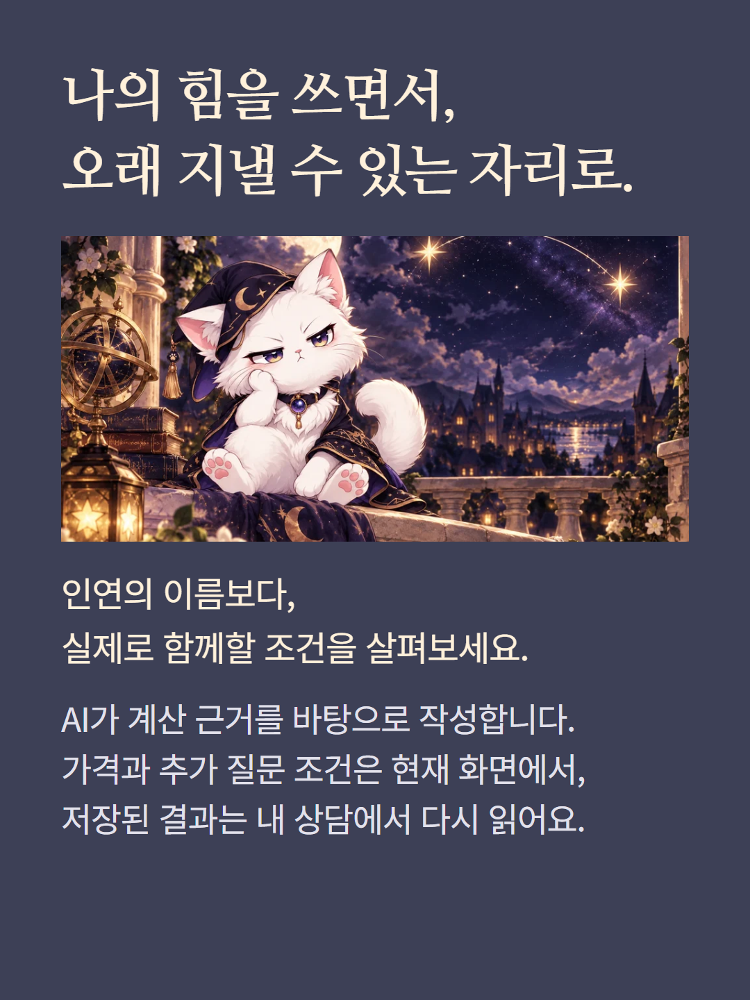

숙요 연어는 본명숙의 기질과 사람 사이에서 드러나는 역할을 바탕으로 선택의 조건을 읽습니다. 이 안내의 이직 질문 상담은 11장, 기본 본명숙 리포트는 6장입니다. 기본 리포트의 관계 이름은 본인에게 대응하는 숙의 유형을 설명하며 특정인의 속마음·등장 시기·궁합을 확인한 결과가 아닙니다. 실제 두 사람 비교에는 두 사람의 출생 정보가 필요합니다. 숙요의 장기 시기 전환은 현재 질문 추천에서 지원하지 않으며 근거 없는 월별 사건을 만들지 않습니다. 천문식 27숙 계산에 출생시간·지역·시간대가 필요합니다. 가상 편집 예시와 AI 작성 상담이며 가격·추가 질문 조건은 기존 화면을 따릅니다.